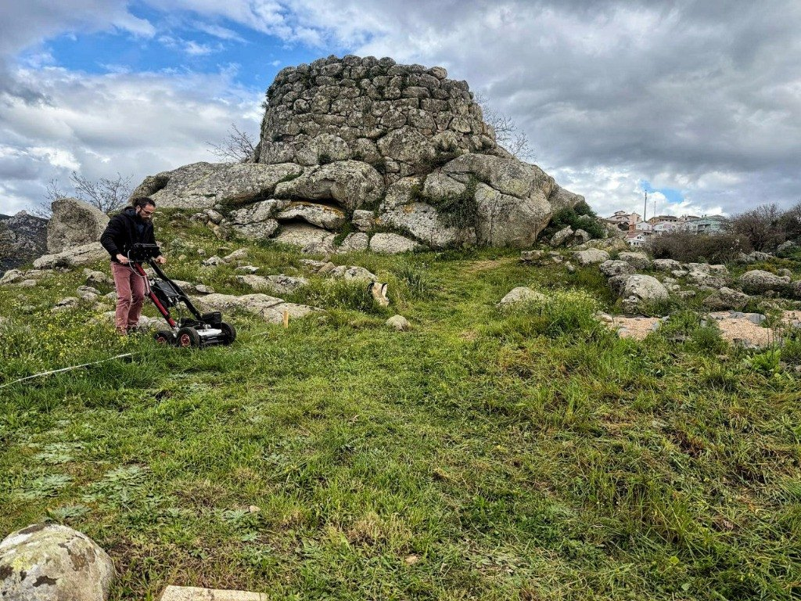

Geofisica Applicata & Software Proprietario GPR/ERT
Mappatura ad alta risoluzione delle anomalie sepolte tramite Georadar (GPR), magnetometria ed ERT 2D/3D. I dati acquisiti vengono elaborati direttamente con un software proprietario sviluppato internamente per la co-registrazione 3D di profili radargramma B-Scan, Time-Slices multi-profondità e sezioni tomografiche ERT.

Acquisizione GPR & Software 3D Proprietario- › Elaborazione diretta con software 3D sviluppato internamente (GPR + Time-Slice + ERT)
- › Acquisizione in contesti complessi con posizionamento GNSS RTK
- › Interpretazione archeo-geofisica vettoriale del grado di affidabilità